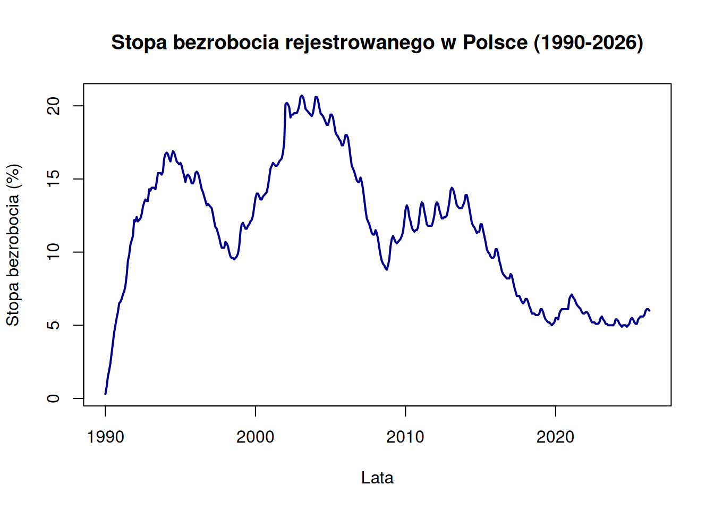

Kod
getSymbols("PKN.WA")[1] "PKN.WA"Kod
#install.packages("remotes")
#remotes::install_github("statisticspoland/R_Package_to_API_BDL")Raport będzie polegał na poddaniu analizie kilku szeregów czasowych (jednym z nich będą informacje giełdowe spółki Orlen), zmapowanie ich do wspólnej częstotliwości, a następnie metodami VAR czy ARIMAX próby odnalezienia współkorelacji dodanych giełdowych i korelacji do innych szeregów czasowych i prognozowanie.
getSymbols("PKN.WA")[1] "PKN.WA"#install.packages("remotes")
#remotes::install_github("statisticspoland/R_Package_to_API_BDL")# https://stat.gov.pl/obszary-tematyczne/rynek-pracy/bezrobocie-rejestrowane/stopa-bezrobocia-rejestrowanego-w-latach-1990-2026,4,1.html
dane_wektora <- c(
# 1990
0.3, 0.8, 1.5, 1.9, 2.4, 3.1, 3.8, 4.5, 5.0, 5.5, 5.9, 6.5,
# 1991
6.6, 6.8, 7.1, 7.3, 7.7, 8.4, 9.4, 9.8, 10.5, 10.8, 11.1, 12.2,
# 1992
12.1, 12.4, 12.1, 12.2, 12.3, 12.6, 13.1, 13.4, 13.6, 13.5, 13.5, 14.3,
# 1993
14.2, 14.4, 14.4, 14.4, 14.3, 14.8, 15.4, 15.4, 15.4, 15.3, 15.5, 16.4,
# 1994
16.7, 16.8, 16.7, 16.4, 16.2, 16.6, 16.9, 16.8, 16.5, 16.2, 16.1, 16.0,
# 1995
16.1, 15.9, 15.5, 15.2, 14.8, 15.2, 15.3, 15.2, 15.0, 14.7, 14.7, 14.9,
# 1996
15.4, 15.5, 15.4, 15.1, 14.7, 14.3, 14.1, 13.8, 13.5, 13.2, 13.3, 13.2,
# 1997
13.1, 13.0, 12.6, 12.1, 11.7, 11.6, 11.3, 11.0, 10.6, 10.3, 10.3, 10.3,
# 1998
10.7, 10.6, 10.4, 10.0, 9.7, 9.6, 9.6, 9.5, 9.6, 9.7, 9.9, 10.4,
# 1999
11.4, 11.9, 12.0, 11.8, 11.6, 11.6, 11.8, 11.9, 12.1, 12.2, 12.5, 13.1,
# 2000
13.7, 14.0, 14.0, 13.8, 13.6, 13.6, 13.8, 13.9, 14.0, 14.1, 14.5, 15.1,
# 2001
15.7, 15.9, 16.1, 16.0, 15.9, 15.9, 16.0, 16.2, 16.3, 16.4, 16.8, 17.5,
# 2002 (Wariant b)
20.1, 20.2, 20.1, 19.9, 19.2, 19.4, 19.4, 19.5, 19.5, 19.5, 19.7, 20.0,
# 2003
20.6, 20.7, 20.6, 20.3, 19.8, 19.7, 19.6, 19.5, 19.4, 19.3, 19.5, 20.0,
# 2004
20.6, 20.6, 20.4, 19.9, 19.5, 19.4, 19.3, 19.1, 18.9, 18.7, 18.7, 19.0,
# 2005
19.4, 19.4, 19.2, 18.7, 18.2, 18.0, 17.9, 17.7, 17.6, 17.3, 17.3, 17.6,
# 2006
18.0, 18.0, 17.8, 17.2, 16.5, 15.9, 15.7, 15.5, 15.2, 14.9, 14.8, 14.8,
# 2007
15.1, 14.8, 14.3, 13.6, 12.9, 12.3, 12.1, 11.9, 11.6, 11.3, 11.2, 11.2,
# 2008
11.5, 11.3, 10.9, 10.3, 9.8, 9.4, 9.2, 9.1, 8.9, 8.8, 9.1, 9.5,
# 2009
10.4, 10.9, 11.1, 10.9, 10.7, 10.6, 10.7, 10.8, 10.9, 11.1, 11.4, 12.1,
# 2010
12.9, 13.2, 13.0, 12.4, 12.1, 11.7, 11.5, 11.4, 11.5, 11.5, 11.7, 12.4,
# 2011
13.1, 13.4, 13.3, 12.8, 12.4, 11.9, 11.8, 11.8, 11.8, 11.8, 12.1, 12.5,
# 2012
13.2, 13.4, 13.3, 12.9, 12.6, 12.3, 12.3, 12.4, 12.4, 12.5, 12.9, 13.4,
# 2013
14.2, 14.4, 14.3, 14.0, 13.6, 13.2, 13.1, 13.0, 13.0, 13.0, 13.2, 13.4,
# 2014
13.9, 13.9, 13.5, 13.0, 12.5, 12.0, 11.8, 11.7, 11.5, 11.3, 11.4, 11.4,
# 2015
11.9, 11.9, 11.5, 11.1, 10.7, 10.2, 10.0, 9.9, 9.7, 9.6, 9.6, 9.7,
# 2016
10.2, 10.2, 9.9, 9.4, 9.1, 8.7, 8.5, 8.4, 8.3, 8.2, 8.2, 8.2,
# 2017
8.5, 8.4, 8.0, 7.6, 7.3, 7.0, 7.0, 7.0, 6.8, 6.6, 6.5, 6.6,
# 2018
6.8, 6.8, 6.6, 6.3, 6.1, 5.8, 5.8, 5.8, 5.7, 5.7, 5.7, 5.8,
# 2019
6.1, 6.1, 5.9, 5.6, 5.4, 5.3, 5.2, 5.2, 5.1, 5.0, 5.1, 5.2,
# 2020 (W grudniu przyjęto wariant b, czyli 6.8, żeby pasowało do 2021b)
5.5, 5.5, 5.4, 5.8, 6.0, 6.1, 6.1, 6.1, 6.1, 6.1, 6.1, 6.8,
# 2021 (Wariant b)
7.0, 7.1, 6.9, 6.8, 6.6, 6.4, 6.3, 6.2, 6.1, 5.9, 5.8, 5.8,
# 2022
5.9, 5.9, 5.8, 5.6, 5.4, 5.2, 5.2, 5.2, 5.1, 5.1, 5.1, 5.2,
# 2023
5.5, 5.6, 5.4, 5.3, 5.1, 5.1, 5.0, 5.0, 5.0, 5.0, 5.0, 5.1,
# 2024
5.4, 5.4, 5.3, 5.1, 5.0, 4.9, 5.0, 5.0, 5.0, 4.9, 5.0, 5.1,
# 2025
5.4, 5.5, 5.4, 5.2, 5.1, 5.1, 5.4, 5.5, 5.6, 5.6, 5.6, 5.7,
# 2026 (Dane do kwietnia włącznie)
6.0, 6.1, 6.1, 6.0
)
# 2. Tworzenie obiektu klasy 'ts' (szereg czasowy o kroku miesięcznym)
bezrobocie_ts <- ts(
data = dane_wektora,
start = c(1990, 1), # Start: styczeń 1990
frequency = 12 # Częstotliwość: 12 miesięcy w roku
)
# 3. Kontrola poprawności danych
print("--- POCZĄTEK SZEREGU ---")[1] "--- POCZĄTEK SZEREGU ---"print(head(bezrobocie_ts, 12)) Jan Feb Mar Apr May Jun Jul Aug Sep Oct Nov Dec
1990 0.3 0.8 1.5 1.9 2.4 3.1 3.8 4.5 5.0 5.5 5.9 6.5print("--- KONIEC SZEREGU ---")[1] "--- KONIEC SZEREGU ---"print(tail(bezrobocie_ts, 12)) Jan Feb Mar Apr May Jun Jul Aug Sep Oct Nov Dec
2025 5.1 5.1 5.4 5.5 5.6 5.6 5.6 5.7
2026 6.0 6.1 6.1 6.0 # 4. Szybki wykres testowy, aby upewnić się, czy nie ma anomalii
plot(
bezrobocie_ts,
main = "Stopa bezrobocia rejestrowanego w Polsce (1990-2026)",
ylab = "Stopa bezrobocia (%)",
xlab = "Lata",
col = "darkblue",
lwd = 2
)
#https://nbp.pl/statystyka-i-sprawozdawczosc/inflacja-bazowa/
# CPI - ten sam miesiac rok wstecz